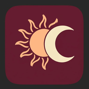

🖼️ RAW ICON TEST
MASTER RAW
Установка приложения с исходным изображением иконки (с серой рамкой)

MASTER RAW
Исходное изображение как было передано — с серой подложкой вокруг скругленного винного квадрата.
📲 Установка на экран Домой (Safari)
- Нажмите кнопку «Поделиться» (квадрат со стрелкой вверх внизу Safari).
- Выберите «На экран „Домой“».
- Имя будет: MASTER RAW.
- Нажмите «Добавить».
← Вернуться к Рекомендованной Чистой версии (Full-Bleed)